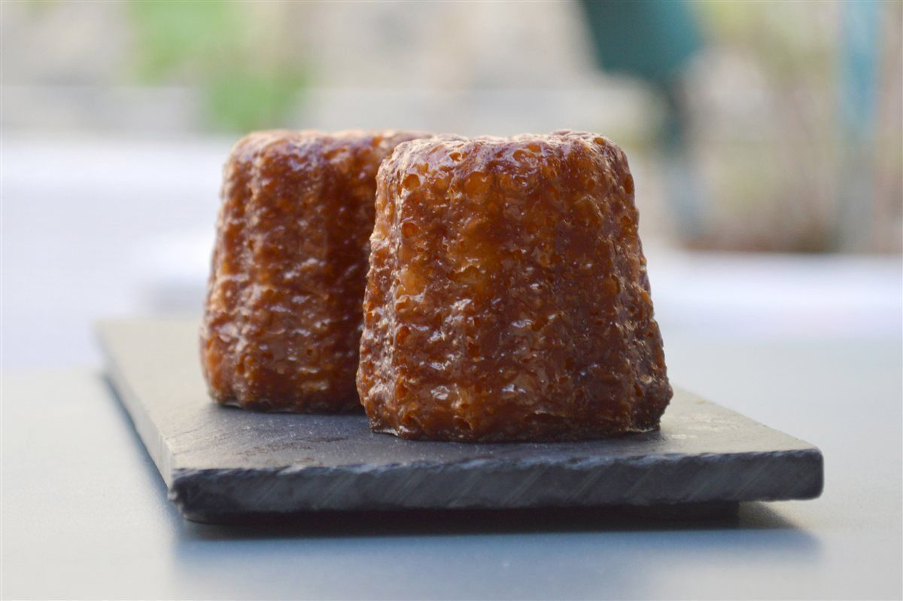
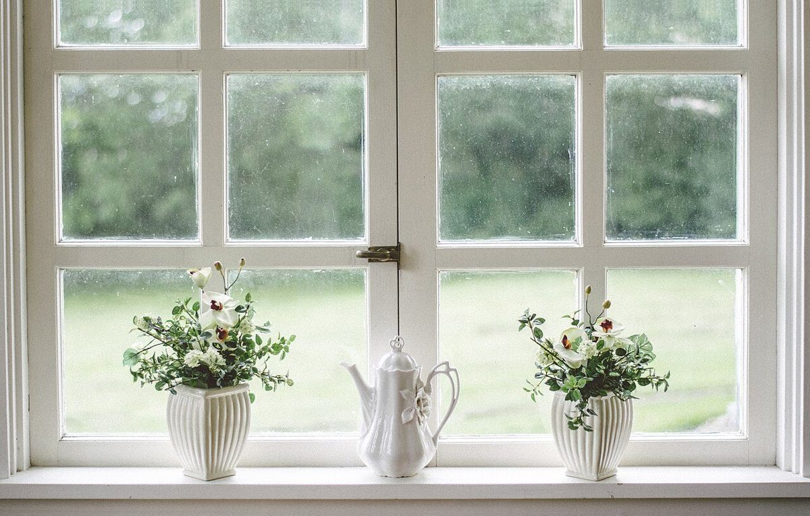
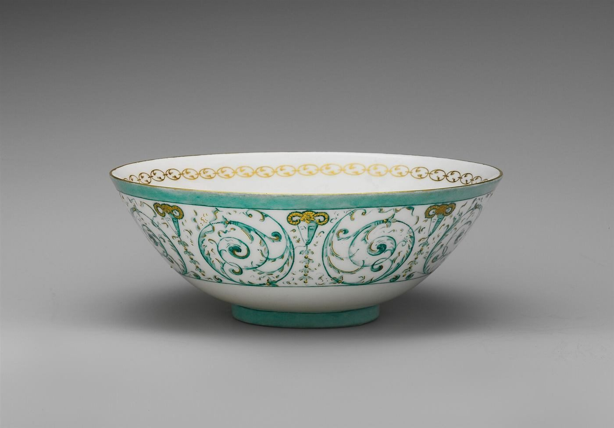
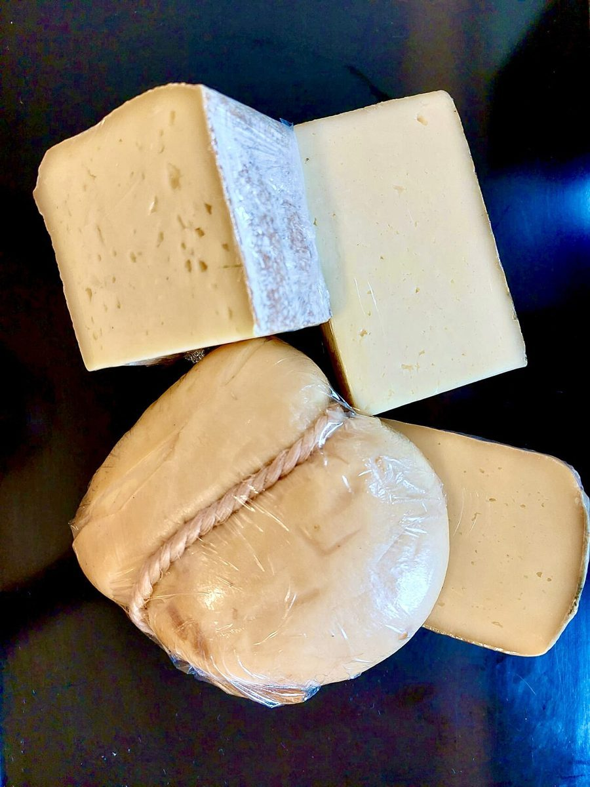

制作側の連想
シャワーカーテンの部位を、配置図にしてみる
シャワーカーテン(浴室で水しぶきをさえぎる、ひだを寄せて下げる布)の部位を図にしたもので、制作側の連想です。お店の理念・由来とは無関係で、実際の製品の仕様を示すものでもありません。六つの部位に番号をふり、上の図と並べています。
凡例
六つの部位
- 1カーテンレール上端に渡す横棒。カーテン全体の重さを受け止める部分。
- 2リングレールに通して下げる小さな輪。カーテンを横に滑らせる部分。
- 3ハトメ上端に並ぶ丸い穴。リングを通すための金属の縁取り。
- 4本体シート防水の薄い生地。ひだを寄せて下げる、いちばん広い部分。
- 5ウェイト裾に仕込む小さな重り。生地が風でふくらみにくいよう下へ引く部分。
- 6すそ下端を折り返した帯。重りをくるみ、ほつれも防ぐ部分。
写真(イメージ)
写真(イメージ)





写真はイメージです。お店のものではありません。